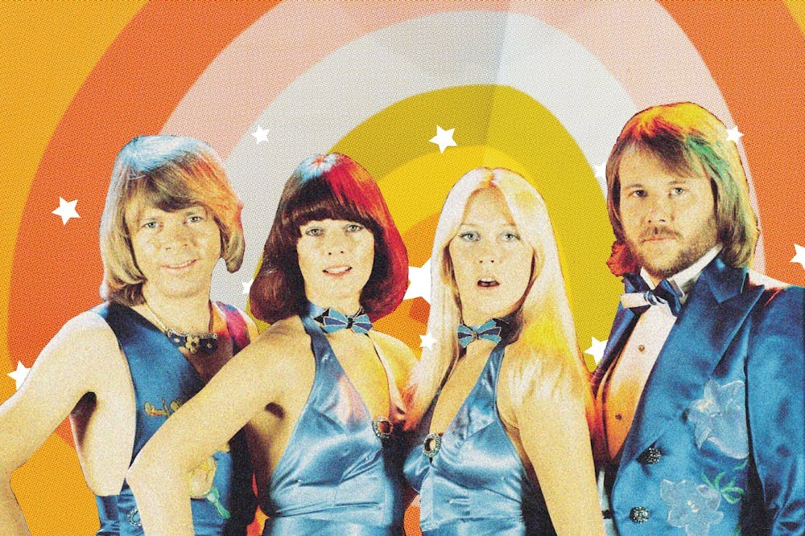
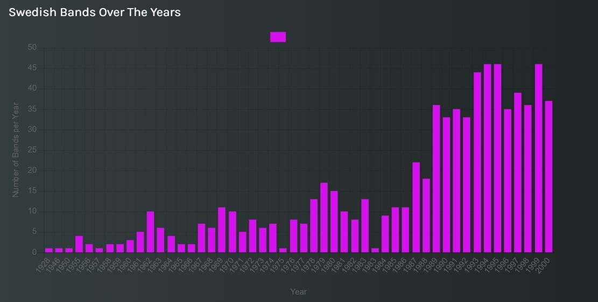
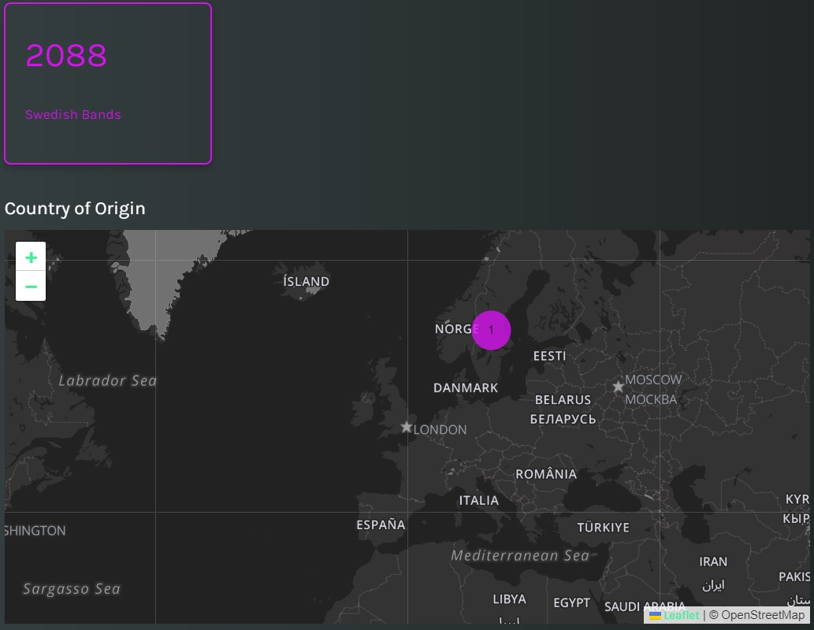

Article
The ABBA: Anything But Outdated
This story will explore one of the most successful pop music groups of all times: the ABBA.

Even though the formation of the Swedish band dates back to fifty years ago, their resonance is still alive in the present day, since they left an indelible trace in the worldwide music culture thanks to their lively pieces of work and their unique style. No other could take over ABBA’s role in shaping the pop music we listen and love today, and it’s not hard to think that their legacy will continue for years to come.
The reason behind the choice of our topic has to be found in our common passion for vintage pop music, of which the ABBA represent somehow the pioneers.
The band was formed in 1972 by Agnetha Fältskog, Björn Ulvaeus, Benny Andersson, and Anni-Frid Lyngstad. The group's name is an acronym of the first letters of their first names arranged as a palindrome. They are one of the most popular and successful musical groups of all times, and are one of the best-selling music acts in the history of popular music, topping the charts worldwide from 1974 to 1982.
Winning the 1974 Eurovision Song Contest on 6 April 1974 gave ABBA the chance to tour Europe and perform on major television shows; thus the band saw the "Waterloo" single chart in many European countries. When they began, ABBA were a folkie foursome exactly as promising as any other Swedish group, i.e. not at all. Until this blatant Bowie tribute became their homeland’s 1974 entry in the annual cheese-fest known as the Eurovision Song Contest. “Waterloo” not only won the prize, it won ABBA global fame — it became their first American hit, crashing the Top Ten. These kids were still a little out of their fjord when it came to singing in English but that just added to the charm. They performed on the fifth episode of a new American TV show called Saturday Night Live, lip-syncing “Waterloo” on board the Titanic.
The primacy of ABBA as first most successful Swedish group of all times was retained also during the following decades, even though at the turn of 1980s and 1990s many other Swedish pop bands entered the world music scene and whose songs have become world hits, such as the Roxette (formed in 1986) and the Ace Of Base (formed in 1990).
Countless are the songs of the ABBA that got into the hearts of their fans, leaving their indelible imprint to the point of being listened still today, more than forty years later. “Dancing Queen”, “Money, Money, Money”, “Voulez-Vous”, “Angeleyes” are just some of the most beloved titles of the present day: they are among the most used background music in video sharing platforms like Tik Tok and have reached hundreds of millions of views on Spotify.
In 1982 ABBA released their last music album, entitled "The Visitors". The album included more obscure and experimental songs than their previous works, and did not have the commercial success of their previous albums. Meanwhile, tensions within the band began to grow, leading to increased tension among the band members. The following year, ABBA officially announced their separation, leaving their fans disappointed and surprised.
Despite the end of their musical career as a group, the music of ABBA continued to rock over time. Their pieces have been used in many films and musicals, including the famous “Mamma Mia!” (2008), whose soundtrack is the homonymous song.

The following clip is a scene from the musical "Mamma Mia!" (2008), where the world famous actress Meryl Streep performs the ABBA's song cover entitled "Mamma Mia (Here I go again)".
In 2016, the group reunited and started working on a digital avatar concert tour. Newly recorded songs were announced in 2018. Voyage, their first new album in 40 years, was released on 5 November 2021 to positive critical reviews and strong sales in numerous countries. ABBA Voyage, a concert residency featuring ABBA as virtual avatars, opened in May 2022 in London.
Click here to reach our MELODY story!

